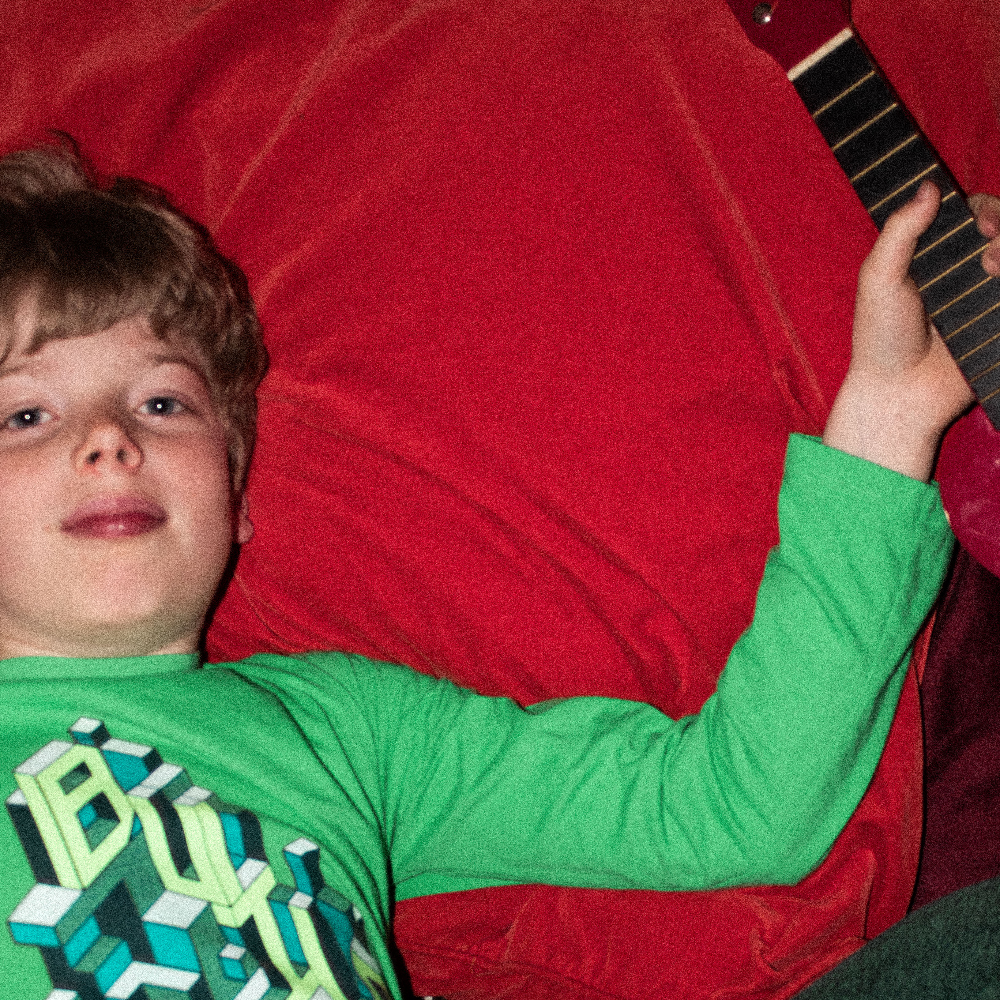
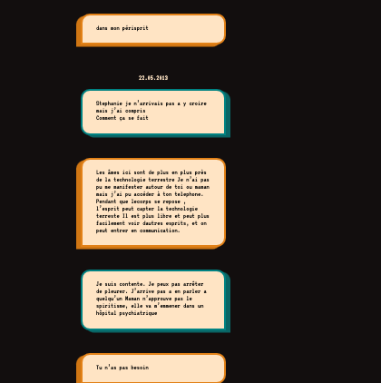

08.05.2013
J’aimerais que tu reviennes, tu me manques,
Dis moi si tu es vivant
10.05.2013

Tu te rappelles? c'est un joli souvenir..
13.05.2013
Stp appelle moi j’ai besoin de savoir si tu es vivant
J’ai besoin d’un signe, ou que tu sois s’il te plait. contacte moi
14.05.2013
Oh mon dieu
t'es ou tu fais quoi ???
reponds vite stp
20.05.2013
j'ai pas les mots
steph, la police est a la maison la
maintenant
Ils nous ont annoncé que tu es décédé
Je suis partie en courant il
fallait que je t’appelle
C’est pas vrai ??? ils ont trouvé quelqu’un
d’autre dans la forêt mais ca peut pas être toi.
Ils ont pas voulu me
montrer les photos ces policiers
20.05.2013

Je suis venue te chercher,c'est pas possible il faut que tu reviennes.
on m'a trouvé. Je t'ai dit bertie
je suis touours là .
Juste pas dans mon enveloppe matérielle
22.05.2013
Stephanie je n’arrivais pas a y croire mais j’ai compris
Comment ça
se fait
Les âmes ici sont de plus en plus près de la technologie terrestre
Je n’ai pas pu me manifester autour de toi ou maman mais j’ai pu accéder
à ton telephone.
Pendant que lecorps se repose , l’esprit peut capter la technologie terreste
Il est plus libre et peut plus facilement voir dautres esprits, et on peut
entrer en communication.
Je suis contente.
Je peux pas arrêter de pleurer. J’arrive pas a en parler a quelqu’un
Maman n’approuve pas le spiritisme, elle va m’emmener dans un hôpital psychiatrique
On peut rester en contact ?
Si je te vois toujours depuis là oui, ma petite sœur
Je suis contente de savoir que tu es toujours lÃ
07.06.2013
J’ai fait un projet a l’ecole inspiré de toi
Ça s’apelle chatbox
